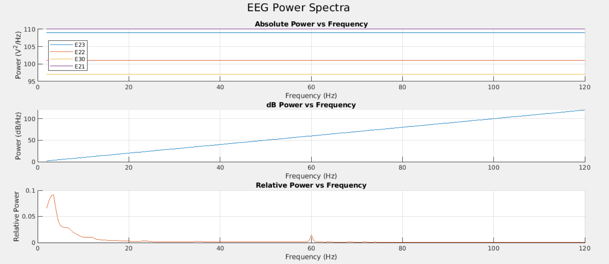

Calculating Resting Power
Introduction
The eeg_htpCalcRestPower function is a powerful tool for analyzing the spectral power of resting-state EEG data, specifically tailored for applications requiring frequency band-specific power metrics. It employs the Welch method, a widely used approach for spectral analysis, which ensures reliable power density estimates by segmenting the data into overlapping windows, applying a Hanning window function, and averaging the results to reduce variance. The function allows customization of key parameters, such as analysis duration, window length, frequency band definitions, and output formats, offering versatility for various research needs. Additionally, it supports GPU acceleration to handle large datasets efficiently and provides the option to save results in CSV or Parquet formats. Detailed documentation is provided below to guide users on effectively utilizing its features and integrating it into EEG analysis workflows.
Preparing The Data
Before using the function make sure EEGLAB is running otherwise the function will error
It is also necessary to first load in the EEG file and then extract the EEG structure as that is the required input for the funciton. (note - make sure the EEG structure includes both a subject id and filename).
Function Inputs
[EEG, results] = eeg_htpCalcRestPower(EEG, varargin)
The function shown above has multiple inputs: EEG and Varargin.
EEG: Main input of the function and a structure with fields such as .data (EEG signal), .srate (sampling rate), .chanlocs (channel info), and .pnts (number of points).
Several optional parameters using the varargin to modify the analysis. You can pass Below are some of the important parameters.
gpuon (logical): Use GPU acceleration to speed up computation. Default is false. Set to true if you have the MATLAB Parallel-Processing toolbox installed.
duration (integer): Duration in seconds to calculate power. Default is 80 seconds. If the duration exceeds the data length, it uses the maximum available data.
offset (integer): Time in seconds to start the calculation. Default is 0.
bandDefs (cell array): Frequency band definitions. You can specify bands like delta, theta, alpha, beta, gamma, etc. Example:
{'delta', 2, 3.5; 'theta', 3.5, 7.5; 'alpha1', 8, 10; 'beta', 13, 30}
outputdir (string): Directory to save the results. By default, it saves in the same directory as the EEG data.
useParquet(logical): Save the output in Parquet format. Default is set to false and will save as CSV if false.
Running the Function with Default Parameters
Here's a simple example using default settings:
[EEG, results] = eeg_htpCalcRestPower(EEG, ...
'duration', 80, ...
'gpuOn', true, ...
'bandDefs', {'delta', 1, 4; 'alpha', 8, 13; 'beta', 13, 30});
In this example, the eeg_htpCalcRestPower function is applied to a loaded EEG dataset to compute the spectral power for a specific segment of the recording. The analysis focuses on an 80-second window of EEG data, beginning 10 seconds into the recording, as specified by the duration and offset parameters. By defining these parameters, the user ensures that the spectral analysis targets a specific portion of interest within the dataset.
The function calculates absolute, relative, and dB power across predefined frequency bands (e.g., delta, theta, alpha, beta, etc.), which can be customized through the bandDefs parameter. In this case, the default band definitions are used unless explicitly modified. Additionally, GPU acceleration is enabled via the gpuOn parameter to improve computation efficiency, making the function well-suited for large datasets or high-resolution EEG recordings.
The results of the analysis include band-specific power metrics for each EEG channel and a detailed spectrogram with power values across the full frequency range. These outputs are stored in the EEG structure's .vhtp field and can be saved in either CSV or Parquet format if an outputdir is specified. The resulting tables facilitate downstream statistical analysis or visualization, supporting a wide range of neuroscience research applications.
Customizing Analysis
In this case you want to utilize GPU acceleration and change the duration to 30 seconds. You can pass the parameters like this:
[EEG, results] = eeg_htpCalcRestPower(EEG, 'gpuon', true, 'duration', 30);
In this example:
GPU is enabled (key-value pair: gpuon, true).
The analysis is performed on 30 seconds of data (key-value pair: duration , 30).
Outputs
Once the function runs, it will output two variables shown below:
EEG: The input EEG structure with the added .vhtp field.
results: A structure with the spectral analysis results.
It will also save the following data into separate files and the results structure (based on your settings):
-
Spectral power results for each channel and frequency band.
-
Spectrogram data as a CSV (or Parquet if enabled) showing the power spectral density across channels.
-
The Quality Index (QI) file summarizes information about the EEG dataset and analysis.
These files will be saved in the output directory specified by outputdir.
Inspecting the Results
The results structure contains the following fields:
-
summary_table: A table of power values (absolute, relative, and dB) for each frequency band. -
spectro: The computed spectrogram for each channel. It also includes relative, absolute, and decibel measurements. -
qi_table: Metadata about the analysis (e.g., sampling rate, number of channels).
Example of how to view the summary table:
disp(results.summary_table);
Will display a table similar to the following example (Note - this table is a shortened version of the full table):
eegid filename chan abs_delta abs_theta abs_alpha1
__________ _________________ ________ _________ _________ __________
"EGI file" "0228_BBLong.raw" {'E1' } 28.541 17.488 23.088
"EGI file" "0228_BBLong.raw" {'E2' } 17.461 13.49 21.089
Here is a plot of the absoulte, relative, ande decibel powers when graphed. Please note not all of the EEG channels are shown:

Additional Notes
Ensure the EEG structure includes the .data, .srate, .nbchan, and .chanlocs fields.
GPU Acceleration: This significantly speeds up computations for large datasets.
Validation: Automatically adjusts the segment length if the dataset is smaller than requested.